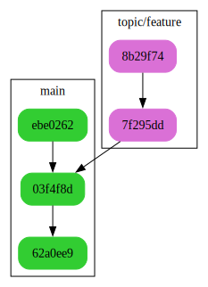
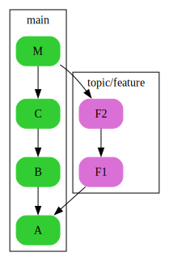

git beginner cheat sheet
This is an introductory git cheat sheet targeting beginner-level git users. With the commands shown here, you will be able to start tracking the history of your projects. There is certainly a lot more you can do with git (and a lot cleaner), but the important thing is to get you started and to provide a reference for infrequent git users. Once you are comfortable with these basic commands (and you don’t need this cheat sheet to remember them), you are advised to use the cheat sheet for advanced users (not finished yet).
command line usage
The command line git application uses so-called commands. The command line syntax is always:
Each command has an extensive manual with lots of examples:
setup
# configure your identity
git config --global user.name 'Jane Doe'
git config --global user.email 'jane.doe@feminism.org'
# show colors
git config --global color.ui auto
# configure aliases
git config --global alias.unstage 'reset HEAD --'
git config --global alias.lol 'log --graph --decorate --oneline --all'basics
create repositories
These are the two ways how to create a local git repository you can work with:
# create empty repository
git init project-name
# create local copy of existing repository
git clone https://github.com/user/project-name.gitThen you can start editing files.
status
the staging area
git has a so-called staging area. The staging area is used to iteratively accumulate changes for the next version.

There are some other commands that let you work with the files in your working directory:
# discard changes to a file
git checkout file
# rename a file
git mv source destination
# remove a file
git rm fileshow changes
# show changes from last commit and staging area to current working copy
git diff
# show contents of staging area
# (i.e. changes from last commit to staging area)
git diff --stagedcommit changes
# opens editor for you to edit commit message
git commit
# commits with a short message
git commit --message 'short commit message'More about commit message conventions here.
view history
Commits are named by their SHA-1 hash. They are often abbreviated for readability. A commit always points to its parent.

# show all commits and their messages
git log
# also show the full diff like in git diff
git log --patch
# shows condensed view of history, only commit message subjects
git lolbranches and merging
branches
The default branch is called master. The master branch contains the current version of the project. Other branches are used e.g. to develop a feature or to resolve an issue. The goal is to do this without influencing the development in master.
# show your local branches
git branch
# show all branches (remotes, too)
git branch --all
# create a new branch
git branch topic/feature
# switch to a branch
git checkout topic/featureMore about branch naming conventions here.
merging
To resolve a branch, i.e. to include its changes in the master branch, you need to merge it:

The so-called merge commits have two parents.
remotes
Add and show remotes:
Fetch latest status of remotes:
Hint: Use git lol after fetching to find out what happened!
solo
The workflow is very simple when you don’t have contributors. Your main remote, which you use for push and pull without any arguments, is called origin.

contributor
The remote of the original author / maintainer is called upstream. You notify the maintainer via requests using the GitHub or GitLab web interfaces, depending where the project is hosted.

maintainer
The remotes of contributors are usually named by their owners.